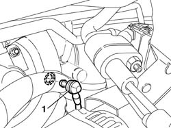
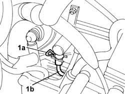
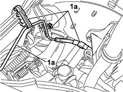
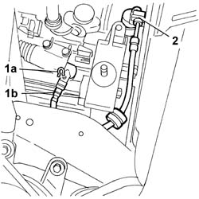

1820B45 RIGID supply PIPE from (pump) - master cylinder R.R. for right hand drive versions
- Path
- Procedures > 18 CLUTCH UNIT > 1820 CLUTCH RELEASE CONTROLS > 1820B HYDRAULIC CLUTCH SYSTEM > 1820B45 RIGID supply PIPE from (pump) - master cylinder R.R. for right hand drive versions
- Kind
- repair procedure (removal / refitting; the operation number is the code)
- Applies to
- all engines; all production periods
- Interactive page
- https://sloeber94.github.io/elrnDB-fDbl/en/#/2584576
Applies to: all engines; all production periods; only with equipment: Right hand drive
 Removing
Removing
 Refitting
RefittingOpen the bonnet
Disconnect the positive battery terminal.
1. Disconnect the vacuum intake valve.

Applies to: all engines; all production periods; only with equipment: Right hand drive
1. Release the spring (1a) retaining the pipe from the master cylinder to the actuator.

Applies to: all engines; all production periods; only with equipment: Right hand drive
1. Release the rigid pipe from the springs on the engine compartment bulkhead.

Applies to: all engines; all production periods; only with equipment: Right hand drive
1. Release the retaining spring for the pipe (1a) on the actuator (1b).
2. Release the pipe from the retaining spring on the left side panel and remove it from the engine compartment.

Applies to: all engines; all production periods; only with equipment: Right hand drive
Refitting
RemovingPosition the pipe in the engine compartment securing the fastening springs to the bodyshell.
Secure the retaining spring for the pipe to the actuator.
Secure the rigid pipe to the springs on the engine compartment bulkhead.
Secure the retaining spring for the pipe from the master cylinder to the actuator.
Connect the vacuum intake valve.
Connect the positive battery terminal.
Close the bonnet lid.